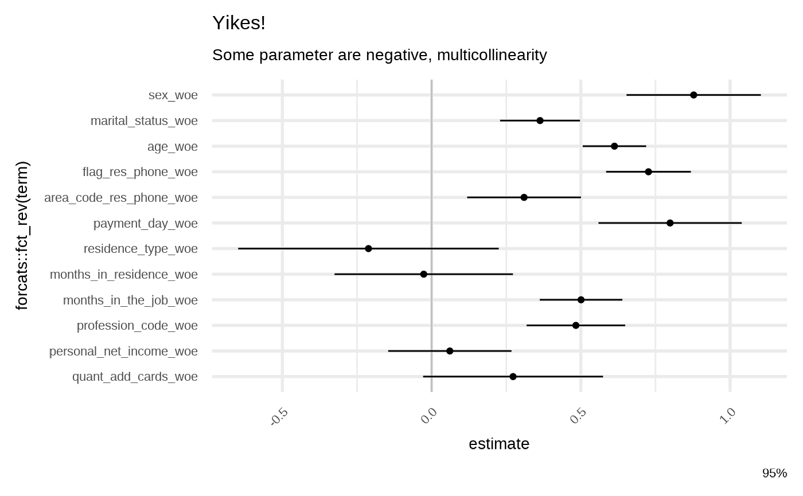
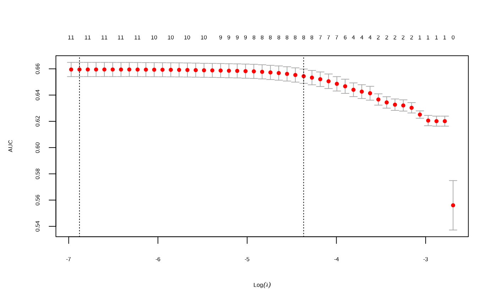

library(risk3r)
library(broom)
library(dplyr)
library(ggplot2)
theme <- theme_minimal(base_size = 7, base_family = "")
theme_set(theme)
data("credit_woe")Raw Model
Let fit a very raw model to check:
train_data <- head(credit_woe, 20000)
test_data <- tail(credit_woe, 20000)
model_raw <- glm(bad ~ ., family = binomial, data = train_data)
broom::tidy(model_raw)
#> # A tibble: 14 × 5
#> term estimate std.error statistic p.value
#> <chr> <dbl> <dbl> <dbl> <dbl>
#> 1 (Intercept) -1.39 0.0185 -75.3 0
#> 2 id_client_woe 1.00 0.279 3.59 3.25e- 4
#> 3 sex_woe 0.880 0.115 7.66 1.89e-14
#> 4 marital_status_woe 0.361 0.0683 5.28 1.32e- 7
#> 5 age_woe 0.614 0.0543 11.3 1.14e-29
#> 6 flag_res_phone_woe 0.729 0.0725 10.1 8.34e-24
#> 7 area_code_res_phone_woe 0.302 0.0974 3.10 1.93e- 3
#> 8 payment_day_woe 0.804 0.123 6.56 5.33e-11
#> 9 residence_type_woe -0.207 0.223 -0.930 3.52e- 1
#> 10 months_in_residence_woe -0.0302 0.153 -0.198 8.43e- 1
#> 11 months_in_the_job_woe 0.501 0.0706 7.10 1.25e-12
#> 12 profession_code_woe 0.481 0.0843 5.71 1.14e- 8
#> 13 personal_net_income_woe 0.0646 0.105 0.613 5.40e- 1
#> 14 quant_add_cards_woe 0.273 0.154 1.77 7.61e- 2
# some parameter are negative, multicollinearity
broom::tidy(model_raw) %>% filter(estimate <= 0 | p.value > 0.05)
#> # A tibble: 5 × 5
#> term estimate std.error statistic p.value
#> <chr> <dbl> <dbl> <dbl> <dbl>
#> 1 (Intercept) -1.39 0.0185 -75.3 0
#> 2 residence_type_woe -0.207 0.223 -0.930 0.352
#> 3 months_in_residence_woe -0.0302 0.153 -0.198 0.843
#> 4 personal_net_income_woe 0.0646 0.105 0.613 0.540
#> 5 quant_add_cards_woe 0.273 0.154 1.77 0.0761
gg_model_coef(model_raw) +
labs(title = "Yikes!")
glmnet
From https://glmnet.stanford.edu/articles/glmnet.html
There 2 option for S: lambda.min and lambda.1se , this last option you have a more regularized model.
This wrapper around the glmnet package take a model as input, then return the model with the variables non zero from the glmnet::cv.glmnet() function according with the selected S option. This function reorder the variables in the same order the coefficient in the glmnet model turn to non zero (check the plots when run this funtion).
model_fsglmnet <- featsel_glmnet(model_raw, S = "lambda.1se", trace.it = FALSE)
broom::tidy(model_fsglmnet)
#> # A tibble: 9 × 5
#> term estimate std.error statistic p.value
#> <chr> <dbl> <dbl> <dbl> <dbl>
#> 1 (Intercept) -1.39 0.0185 -75.4 0
#> 2 age_woe 0.616 0.0520 11.9 1.88e-32
#> 3 flag_res_phone_woe 0.743 0.0716 10.4 3.01e-25
#> 4 marital_status_woe 0.376 0.0674 5.58 2.41e- 8
#> 5 months_in_the_job_woe 0.521 0.0687 7.59 3.12e-14
#> 6 sex_woe 0.822 0.112 7.35 2.04e-13
#> 7 profession_code_woe 0.493 0.0840 5.87 4.32e- 9
#> 8 payment_day_woe 0.805 0.122 6.57 4.87e-11
#> 9 area_code_res_phone_woe 0.312 0.0973 3.20 1.37e- 3
broom::tidy(model_fsglmnet) %>% filter(estimate <= 0 | p.value > 0.05)
#> # A tibble: 1 × 5
#> term estimate std.error statistic p.value
#> <chr> <dbl> <dbl> <dbl> <dbl>
#> 1 (Intercept) -1.39 0.0185 -75.4 0
gg_model_coef(model_fsglmnet)Setpwise forward
This is a wrapper for stats::step but the start point model is the null one response ~ 1.
model_fsstep <- featsel_stepforward(model_raw, trace = 0)
broom::tidy(model_fsstep)
#> # A tibble: 11 × 5
#> term estimate std.error statistic p.value
#> <chr> <dbl> <dbl> <dbl> <dbl>
#> 1 (Intercept) -1.39 0.0185 -75.3 0
#> 2 age_woe 0.610 0.0521 11.7 1.13e-31
#> 3 flag_res_phone_woe 0.734 0.0719 10.2 1.79e-24
#> 4 months_in_the_job_woe 0.510 0.0690 7.40 1.40e-13
#> 5 sex_woe 0.871 0.114 7.61 2.66e-14
#> 6 payment_day_woe 0.805 0.122 6.57 4.87e-11
#> 7 profession_code_woe 0.482 0.0842 5.72 1.04e- 8
#> 8 marital_status_woe 0.357 0.0679 5.26 1.46e- 7
#> 9 id_client_woe 1.00 0.279 3.59 3.29e- 4
#> 10 area_code_res_phone_woe 0.304 0.0973 3.12 1.79e- 3
#> 11 quant_add_cards_woe 0.299 0.148 2.02 4.36e- 2
broom::tidy(model_fsstep) %>%
filter(estimate <= 0 | p.value > 0.05)
#> # A tibble: 1 × 5
#> term estimate std.error statistic p.value
#> <chr> <dbl> <dbl> <dbl> <dbl>
#> 1 (Intercept) -1.39 0.0185 -75.3 0
gg_model_coef(model_fsstep)Repetitive round of drop out loss
From https://ema.drwhy.ai/featureImportance.html
The stat = "min" option give the most simpler model because It’more strict: If any iteration the loss increase then the variable is removed. You can choose between c("q25", "mean", "median")
model_lss_prmt <- featsel_loss_function_permutations(
model_fsglmnet,
stat ="min",
B = 50
)
library(patchwork)
attr(model_lss_prmt, "plots") %>%
purrr::reduce(`+`) &
patchwork::plot_layout(ncol = 1) &
theme
broom::tidy(model_lss_prmt)
broom::tidy(model_lss_prmt) %>%
filter(estimate <= 0 | p.value > 0.05)
gg_model_coef(model_lss_prmt)Manual
Let suppose you have a nice model, but you want to reduce the number of variables.
Maybe you want check:
model_partials(model_fsstep)
#> # A tibble: 10 × 5
#> variable ks auc iv gini
#> <fct> <dbl> <dbl> <dbl> <dbl>
#> 1 age_woe 0.193 0.620 0.191 0.240
#> 2 flag_res_phone_woe 0.201 0.638 0.232 0.276
#> 3 months_in_the_job_woe 0.210 0.645 0.254 0.289
#> 4 sex_woe 0.222 0.650 0.271 0.299
#> 5 payment_day_woe 0.237 0.655 0.300 0.309
#> 6 profession_code_woe 0.238 0.657 0.307 0.315
#> 7 marital_status_woe 0.237 0.660 0.316 0.320
#> 8 id_client_woe 0.241 0.661 0.321 0.322
#> 9 area_code_res_phone_woe 0.239 0.662 0.314 0.324
#> 10 quant_add_cards_woe 0.240 0.662 0.311 0.325
gg_model_partials(model_fsstep) +
ggplot2::facet_wrap(
ggplot2::vars(.data$key), ncol = 2,
scales = "free_y"
)